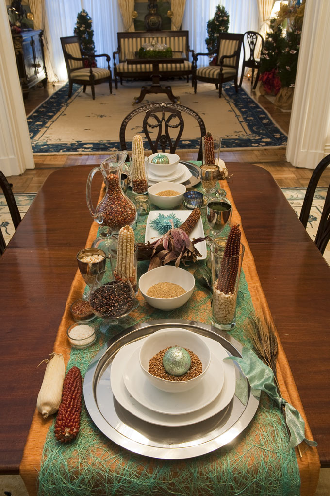

ROB CARDILLO
MOTHER EARTH NEWS decorated rooms in the President's Guest House with messages of environmental stewardship and national food security for the holiday season. Jackson Place Dining Room, Blair House, Washington, D.C.